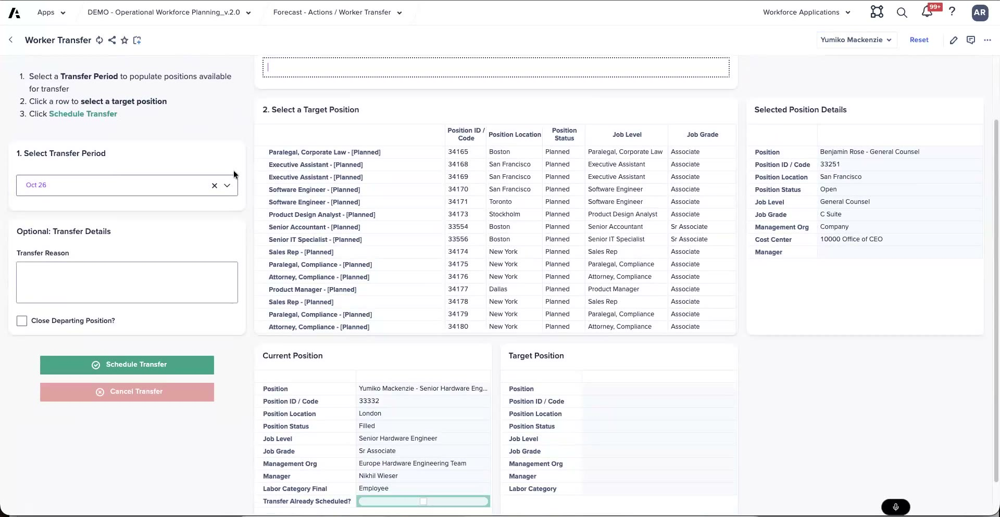

Lab: Transfer a Worker
Move a worker into an open position — backfill or close
These steps follow what was shown in the workshop demo. Exact page names, button labels, and values vary by release and by your training tenant — treat the steps as a guide and confirm as you go. The Check my work button records your attempt; automated validation against Anaplan is not wired up yet.
What you'll do
- Open Worker Transfer for Yumiko, a senior hardware engineer based in London, in your Golden Copy training tenant
- Select a transfer period and search open positions in the CPP filtered to "hardware"
- Pick a target position from the results and enter a transfer reason
- Decide the Close Departing Position? flag — backfill the vacated position or close it
- Schedule the transfer and review the Current vs Target Position panels
Exercise Overview
In this lab you move an existing worker into an open position — an internal transfer. You'll work with Yumiko Mackenzie, a senior hardware engineer (senior associate) in London. Because selective access governs everything a user sees, the positions you can transfer to are the open and planned positions you have access to in the CPP. The key decision is what happens to the position Yumiko leaves behind: backfill it, or close it.
Work through the steps in your training tenant with real sample data. After each step, read what changes in the Current vs Target Position panels — that side-by-side is how you sanity-check a transfer before you schedule it. Remember transfers are scheduled at the month level, not the day.
Guided Steps — Transfer Yumiko
Navigate to the CPP plan actions and open Worker Transfer for Yumiko Mackenzie.
Start from Yumiko's worker card or from the Plan actions menu, then choose the worker-transfer action. Selective access limits the target positions you'll see to the orgs and positions you have rights to.
- Open Worker Transfer for Yumiko and confirm her current position: senior hardware engineer, senior associate, London.
- Select a transfer period. Transfers schedule at the month level, so pick the month the move should take effect (for example, October).
- Search all planned and open positions in the CPP, filtered to "hardware". You should see open senior hardware engineer roles and a senior director of hardware engineering (which would require a move to Boston). An EA role in London is an alternative that keeps her in London.
- Pick a target position from the results.
- Enter a transfer reason.
- Set the Close Departing Position? flag — leave it unchecked to backfill Yumiko's vacated position (its ID flips to open), or check it to close that position (its ID flips to closed).
- Review the Current vs Target Position panels, then Schedule Transfer. When the model rolls to the transfer month, the move applies and actuals align as HCM data arrives.

Worker Transfer for Yumiko Mackenzie — transfer period, target-position search, reason, the Close Departing Position? flag, and the Current vs Target Position panels.
Transfers run one at a time — there's no mass transfer yet, and no approval process on a transfer: it executes when the scheduled month hits. Both are logged as future enhancements, so don't look for an approval step here.
Yumiko moves out of her senior hardware engineer position and you leave Close Departing Position? unchecked. What happens to the position she vacated?
Why does an internal transfer of Yumiko into an open hardware role tell a better cost story than opening a brand-new requisition?
When you've transferred Yumiko into a target hardware position, made the backfill-vs-close decision, and scheduled the move, click below to record your attempt.
Worker transfer scheduled for Yumiko.
- Worker Transfer opened for Yumiko → current position confirmed (senior hardware engineer, London)
- Transfer period selected → the month the move takes effect
- Target position picked → chosen from the open/planned positions filtered to "hardware"
- Transfer reason entered → a reason recorded on the transfer
- Close Departing Position? decided → backfill (open) or close (closed) chosen deliberately
- Schedule Transfer run → move scheduled after reviewing Current vs Target Position
Next: Skills Matching — find internal candidates by skill.
Debrief Questions
- You chose to backfill Yumiko's vacated position rather than close it. What in the org's plan would make you choose the opposite — closing the position instead?
- The senior director of hardware engineering role would move Yumiko to Boston, while the EA role keeps her in London. How would you weigh the cost, skills fit, and location trade-offs when advising the manager?
- There is no approval step on a transfer — it just executes when the month hits. If a customer needs sign-off before a worker moves, how would you frame that as a future enhancement versus something to handle with selective access today?
- Transfers are one at a time and scheduled at the month level. What would you tell a customer who wants to move a whole team on a specific day?